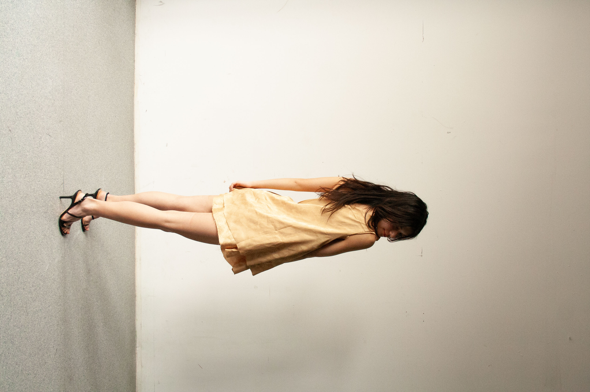
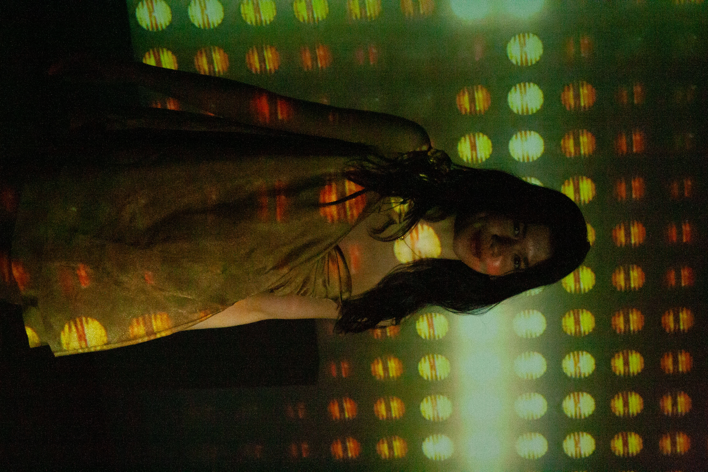

Vegas Desert Cover-up Design
- Fashion Show Theme: "Nature, Fashion, and Vegas."
- Fashion Show Goal: to use sustainable materials and make the design itself tell the viewer something about both Las Vegas and nature itself.
- My Design Goal: this design is meant to highlight the juxtaposition and irony of a city in the middle of the desert partially being known for luxurious hotels with extravagant pools.
- Design Execution: using materials from my late grandmother's supply, I designed this piece to be reminiscent of a swimsuit and coverup, contrasted with the tan color in order to call back to the desert landscape just outside the city.
Photoshoot Behind the Scenes


